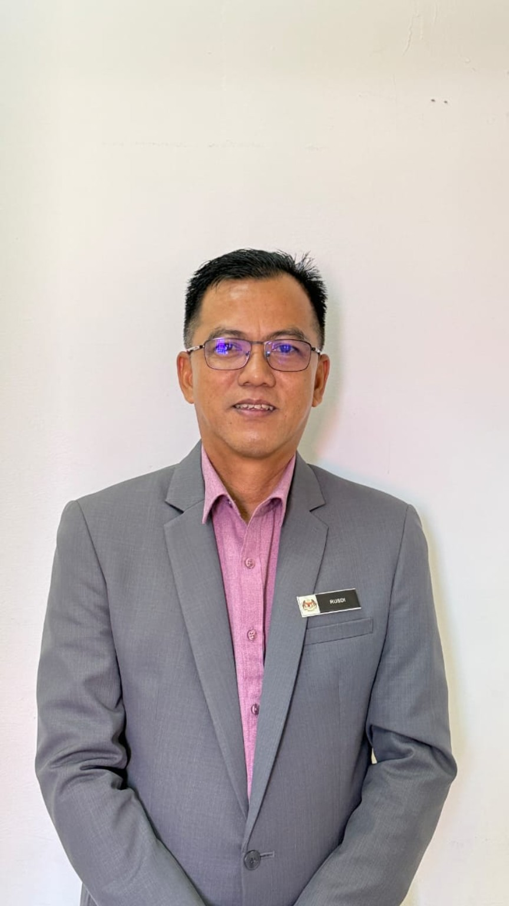
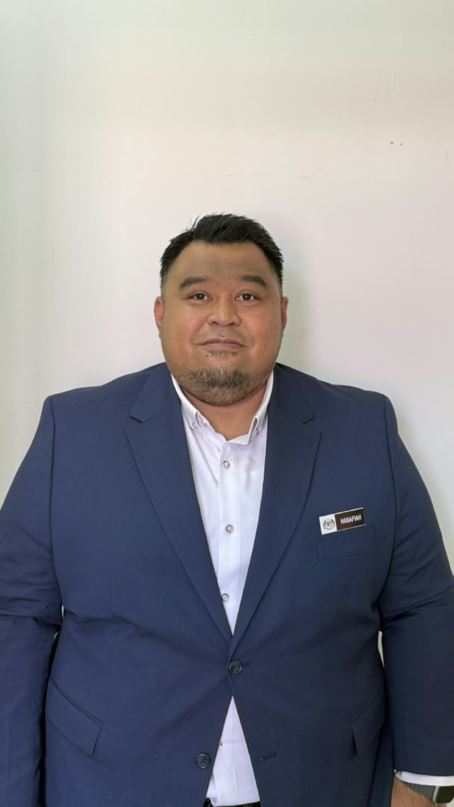
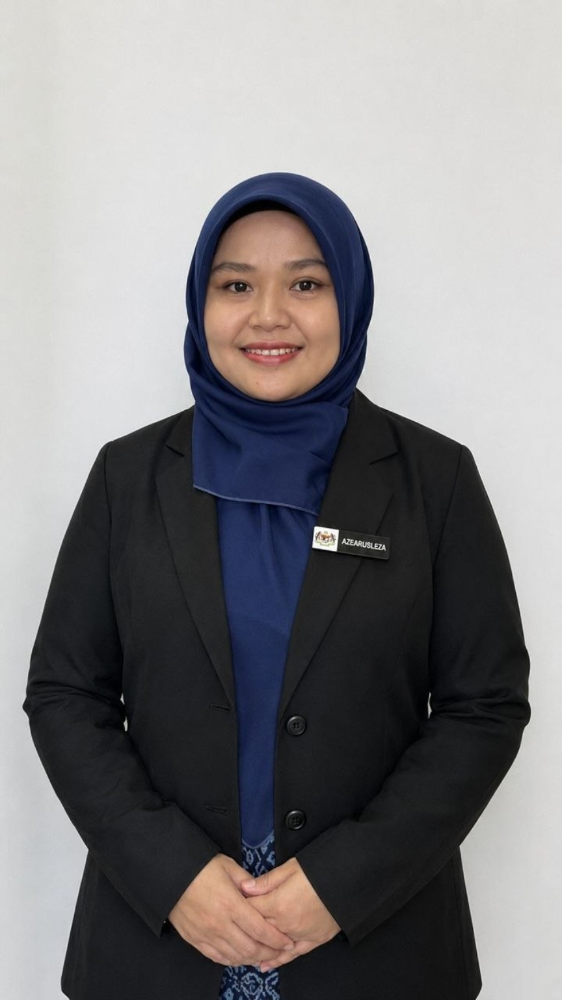
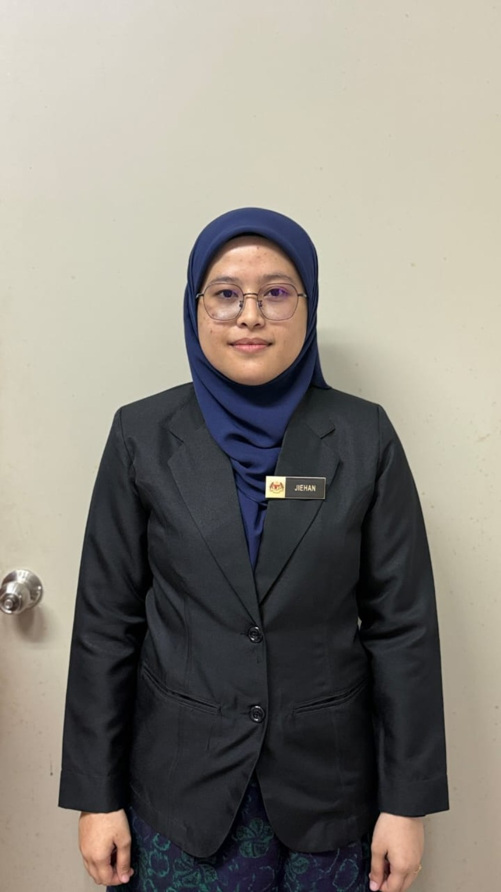

01KETUA PENGGERAKINNOVATION LEADER
Rusdi bin Suin
Guru Besar · SK Pekan Kota Belud
Ketua penggerak inovasi AKIDAH INTERAKTIF.
OUR TEAM · SK PEKAN KOTA BELUD
Kenali individu yang bersama-sama menggerakkan AKIDAH INTERAKTIF: SMART LEARNING SYSTEM.
Digerakkan bersama warga pendidik SK Pekan Kota Belud, Sabah.
Setiap individu membawa peranan dan sumbangan tersendiri dalam menjayakan perjalanan AKIDAH INTERAKTIF.

01KETUA PENGGERAKGuru Besar · SK Pekan Kota Belud
Ketua penggerak inovasi AKIDAH INTERAKTIF.

02Penolong Kanan 1 · SK Pekan Kota Belud
Barisan kepimpinan sekolah yang menyokong usaha inovasi.

03DIGITAL CREATORGuru Pendidikan Islam · SK Pekan Kota Belud
Pembangunan dan reka bentuk inovasi digital AKIDAH INTERAKTIF.

04Guru Pendidikan Islam · SK Pekan Kota Belud
Penyelarasan susunan kandungan dan penambahbaikan sistem.
Menghubungkan ilmu akidah dengan pengalaman pembelajaran digital yang lebih interaktif, menarik dan sistematik.
AKIDAH INTERAKTIF · SMART LEARNING SYSTEM · 2026
Ikuti proses dan detik pembangunan AKIDAH INTERAKTIF.